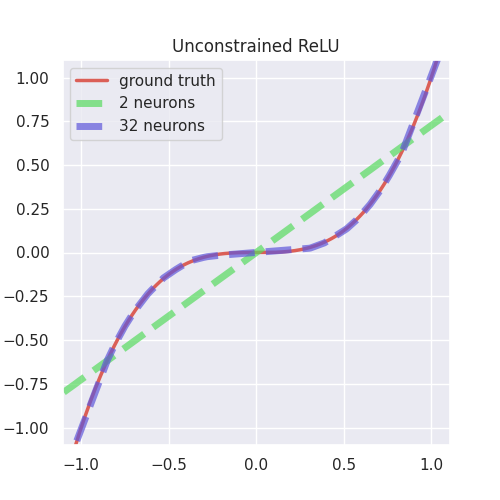
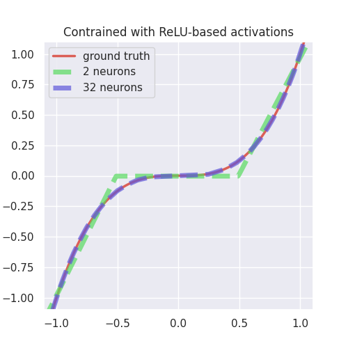
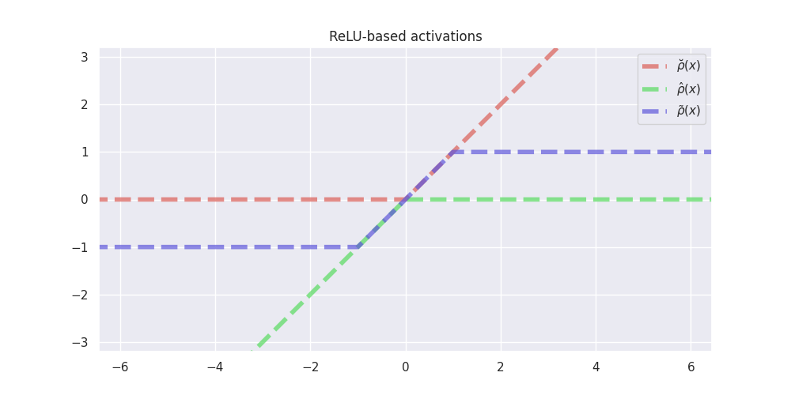
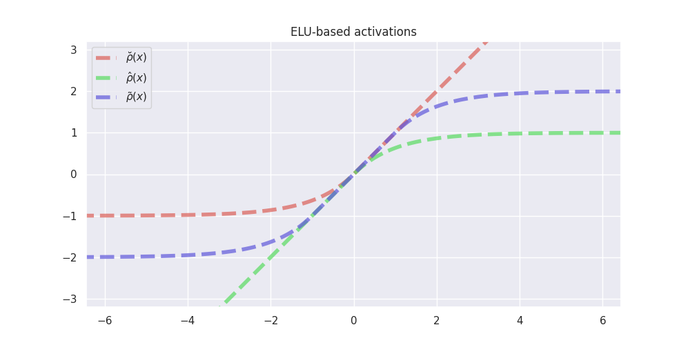
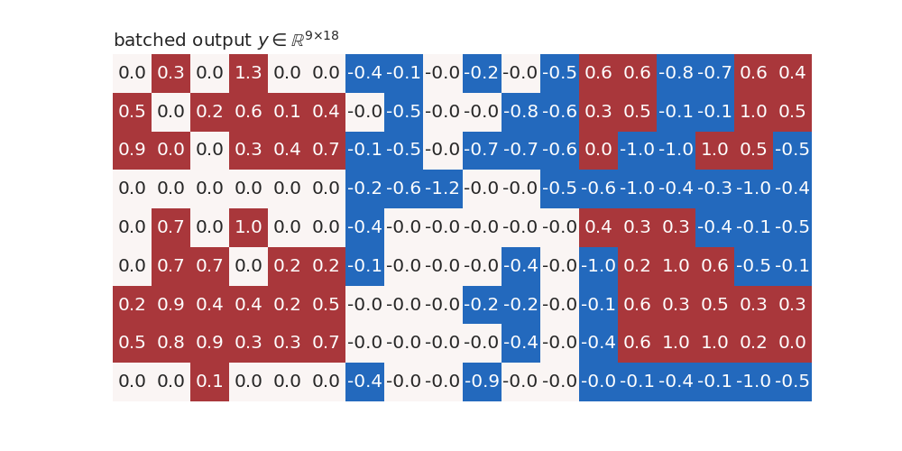
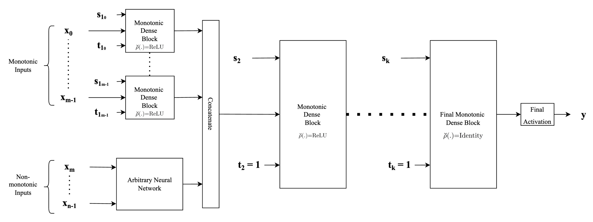

In-depth explanation¤
Introduction¤
The simplest method to achieve monotonicity by construc- tion is to constrain the weights of the fully connected neural network to have only non-negative (for non-decreasing vari- ables) or only non-positive values (for non-ascending) vari- ables when used in conjunction with a monotonic activation function, a technique known for 30 years (Archer & Wang, 1993). When used in conjunction with saturated (bounded) activation functions such as the sigmoid and hyperbolic tan- gent, these models are difficult to train, i.e. they do not converge to a good solution. On the other hand, when used with non-saturated (unbounded) convex activation functions such as ReLU (Nair & Hinton, 2010), the resulting models are always convex (Liu et al., 2020), severely limiting the applicability of the method in practice.
Our main contribution is a modification of the method above which, in conjunction with non-saturated activation func- tions, is capable of approximating non-convex functions as well: when the original activation function is used with additional two monotonic activation functions constructed from it in a neural network with constrained weights, it can approximate any monotone continuous functions. The resulting model is guaranteed to be monotonic, can be used in conjunction with popular convex monotonic non- saturated activation function, doesn’t have any additional parameters compared to a non-monotonic fully-connected network for the same task, and can be trained without any additional requirements on the learning procedure. Experi- mental results show it is exceeding the performance of all other state-of-the-art methods, all while being both simpler (in the number of parameters) and easier to train. Our contributions can be summarized as follows:
-
A modification to an existing constrained neural net- work layer enabling it to model arbitrary monotonic function when used with non-saturated monotone con- vex activation functions such as ReLU, ELU, SELU, and alike.
-
Experimental comparisons with other recent works showing that the proposed architecture can yield equal or better results than the previous state-of-the-art and with significantly fewer parameters.
-
A proof showing that the proposed architecture can approximate any monotone continuous function on a compact subset of Rn for a large class of non-saturated activation functions.
The problem¤
Most of the commonly used activation functions such as ReLU, ELU, SELU, etc. are monotonically increasing zero-centred, convex, lower-bounded non-polynomial functions. When used in a fully-connected, feed-forward neural network with at least one hidden layer and with unconstrained weights, they can approximate any continuous function on a compact subset. The simplest way to construct a monotonic neural network is to constrain its weights when used in conjunction with a monotone activation function. However, when the activation function is convex as well, the constrained neural network is not able to approximate non-convex functions.
To better illustrate this, and to propose a simple solution in this particular example, we refer the readers to plots below where the goal is to approximate the simple cubic function \(x^3\) using a neural network with a single hidden layer with either \(2\) or \(32\) neurons and with ReLU activation. A cubic function is apt for our illustration since it is concave in the considered interval \([-1, 0]\) and convex in the interval \([0, 1]\).
# # | hide
# kind = "Unconstrained ReLU"
# units = 2
# model = create_model(kind, units=units)
# model.summary()
# train_model(model, lr=0.3)
# models[(kind, units)] = model
|  | The plot to the left shows two fully-connected neural networks with one hidden layer with 2 and 32 neurons and ReLU activations approximating the qubic function on the interval \[-1, 1\]. An unconstrained ReLU network with n neurons can approximate both concave and convex segments of the cubic function using at most n + 1 piecewise linear segments. Increasing the number of neurons will pro- vide a better fit with the function being approximated. Notice that even though the cubic function is mono- tone, there is no guarantee that the trained model will be monotone as well. |
| If we constrain the weights of the network to be non- negative while still employing ReLU activation, the resulting model is monotone and convex. We can no longer approximate non-convex segments such as the cubic function on \[−1, 0\] in the figure, and increasing the number of neurons from 2 to 32 does not yield any significant improvement in the approximation. | |
|  | Our proposed solution uses a combination of three activation functions in the hidden layer in order to gain the ability to model non-convex, monotone continuous functions. Notice that increasing the number of neu- rons increases the number of piecewise linear segments to approximate the cubic function. The resulting net- work is monotone by construction even when trained on noisy data. |
Actvation Functions¤
Our construction is based on generating two additional activation functions from a typical non-saturated activation function such as ReLU, ELU and SELU.
We use \(\breve{\mathcal{A}}\) to denote the set of all zero-centred, monotonically increasing, convex, lower-bounded functions. Let \(\breve{\rho} \in \breve{\mathcal{A}}\). Then
An example of such activation functions are given in figures below:
 
Monotonicity indicator¤
Our construction is preconditioned on a priori knowledge of (partial) monotonicity of a multivariate, multidimensional function \(f\). Let \(f: K \mapsto \mathbb{R}^m\) be defined on a compact segment \(K \subseteq \mathbb{R}^n\). Then we define its \(n\)-dimensional monotonicity indicator vector \(\mathbf{t} = [t_1, \dots, t_n]\) element-wise as follows:
Given an \((m \times n)\)-dimensional matrix \(\mathbf{M}\) and \(n\)-dimensional monotonicity indicator vector \(\mathbf{t}\), we define the operation \(|.|_{t}\) assigning an \((m \times n)\)-dimensional matrix \(\mathbf{M'} = |\mathbf{M}|_{t}\) to \(\mathbf{M}\) element-wise as follows:
Below is an example of a kernel \(W\in \mathbb{R}^{9 × 12}\) with 12 units and 9 inputs before and after applying the monotonicity indicator \(t =(-1, -1, -1, 0, 0, 0, 1, 1, 1)\):


Monotonic Dense Layer¤
Monotonic Dense Unit
(MonoDense
class) uses weight constrains and activation functions constructed as
explained above to construct partially monotonic neural networks. The
below is the figure from the paper for reference.
In the constructor of
MonoDense
class:
-
the parameter
monotonicity_indicatorcorresponds to t in the figure below, and -
parameters
is_convex,is_concaveandactivation_weightsare used to calculate the activation selector s as follows: -
if
is_convexoris_concaveis True, then the activation selector s will be (units, 0, 0) and (0,units, 0), respecively. -
if both
is_convexoris_concaveis False, then theactivation_weightsrepresent ratios between \(\breve{s}\), \(\hat{s}\) and \(\tilde{s}\), respecively. E.g. ifactivation_weights = (2, 2, 1)andunits = 10, then

Bellow is an example of a batched input to MoneDense layer with batch
size 9 and 12 inputs features.

The figure below is an example of a kernel with 18 units and 12 input features.

The input \(x\) is multiplied with kernel \((|W^T|_t)^T \in \mathbb{R}^{12 × 18}\) after applying monotonicity indicator \(t \in \mathbb{R}^{12}\) to it and then the bias \(b\) (initially set to 0) is added to it:

Architecture types¤
The main advantage of our proposed monotonic dense unit is its
simplicity. We can build deep neural nets with different architectures
by plugging in our monotonic dense blocks. We have two functions for
building neural networks using
MonoDense
layer.
Type-1 architecture¤
The first example shown in the figure below corresponds to the standard MLP type of neural network architecture used in general, where each of the input features is concatenated to form one single input feature vector \(\mathbf{x}\) and fed into the network, with the only difference being that instead of standard fully connected or dense layers, we employ monotonic dense units throughout. For the first (or input layer) layer, the indicator vector \(\mathbf{t}\), is used to identify the monotonicity property of the input feature with respect to the output. Specifically, \(\mathbf{t}\) is set to \(1\) for those components in the input feature vector that are monotonically increasing and is set to \(-1\) for those components that are monotonically decreasing and set to \(0\) if the feature is non-monotonic. For the subsequent hidden layers, monotonic dense units with the indicator vector \(\mathbf{t}\) always being set to \(1\) are used in order to preserve monotonicity. Finally, depending on whether the problem at hand is a regression problem or a classification problem (or even a multi-task problem), an appropriate activation function (such as linear activation or sigmoid or softmax) to obtain the final output.

inputs = {name: Input(name=name, shape=(1,)) for name in list("abcd")}
outputs = MonoDense.create_type_1(
inputs=inputs,
units=64,
final_units=10,
activation="elu",
n_layers=3,
final_activation="softmax",
monotonicity_indicator=dict(a=1, b=0, c=-1, d=0),
dropout=0.1,
)
model = Model(inputs=inputs, outputs=outputs)
model.summary()
Model: "model_6"
__________________________________________________________________________________________________
Layer (type) Output Shape Param # Connected to
==================================================================================================
a (InputLayer) [(None, 1)] 0 []
b (InputLayer) [(None, 1)] 0 []
c (InputLayer) [(None, 1)] 0 []
d (InputLayer) [(None, 1)] 0 []
concatenate (Concatenate) (None, 4) 0 ['a[0][0]',
'b[0][0]',
'c[0][0]',
'd[0][0]']
mono_dense_0 (MonoDense) (None, 64) 320 ['concatenate[0][0]']
dropout (Dropout) (None, 64) 0 ['mono_dense_0[0][0]']
mono_dense_1_increasing (MonoD (None, 64) 4160 ['dropout[0][0]']
ense)
dropout_1 (Dropout) (None, 64) 0 ['mono_dense_1_increasing[0][0]']
mono_dense_2_increasing (MonoD (None, 10) 650 ['dropout_1[0][0]']
ense)
tf.nn.softmax (TFOpLambda) (None, 10) 0 ['mono_dense_2_increasing[0][0]']
==================================================================================================
Total params: 5,130
Trainable params: 5,130
Non-trainable params: 0
__________________________________________________________________________________________________
Type-2 architecture¤
The figure below shows another example of a neural network architecture that can be built employing proposed monotonic dense blocks. The difference when compared to the architecture described above lies in the way input features are fed into the hidden layers of neural network architecture. Instead of concatenating the features directly, this architecture provides flexibility to employ any form of complex feature extractors for the non-monotonic features and use the extracted feature vectors as inputs. Another difference is that each monotonic input is passed through separate monotonic dense units. This provides an advantage since depending on whether the input is completely concave or convex or both, we can adjust the activation selection vector \(\mathbf{s}\) appropriately along with an appropriate value for the indicator vector \(\mathbf{t}\). Thus, each of the monotonic input features has a separate monotonic dense layer associated with it. Thus as the major difference to the above-mentioned architecture, we concatenate the feature vectors instead of concatenating the inputs directly. The subsequent parts of the network are similar to the architecture described above wherein for the rest of the hidden monotonic dense units, the indicator vector \(\mathbf{t}\) is always set to \(1\) to preserve monotonicity.

inputs = {name: Input(name=name, shape=(1,)) for name in list("abcd")}
outputs = MonoDense.create_type_2(
inputs,
units=32,
final_units=10,
activation="elu",
final_activation="softmax",
n_layers=3,
dropout=0.2,
monotonicity_indicator=dict(a=1, b=0, c=-1, d=0),
is_convex=dict(a=True, b=False, c=False, d=False),
)
model = Model(inputs=inputs, outputs=outputs)
model.summary()
Model: "model_7"
__________________________________________________________________________________________________
Layer (type) Output Shape Param # Connected to
==================================================================================================
a (InputLayer) [(None, 1)] 0 []
b (InputLayer) [(None, 1)] 0 []
c (InputLayer) [(None, 1)] 0 []
d (InputLayer) [(None, 1)] 0 []
mono_dense_a_increasing_convex (None, 8) 16 ['a[0][0]']
(MonoDense)
dense_b (Dense) (None, 8) 16 ['b[0][0]']
mono_dense_c_decreasing (MonoD (None, 8) 16 ['c[0][0]']
ense)
dense_d (Dense) (None, 8) 16 ['d[0][0]']
preprocessed_features (Concate (None, 32) 0 ['mono_dense_a_increasing_convex[
nate) 0][0]',
'dense_b[0][0]',
'mono_dense_c_decreasing[0][0]',
'dense_d[0][0]']
mono_dense_0_convex (MonoDense (None, 32) 1056 ['preprocessed_features[0][0]']
)
dropout_2 (Dropout) (None, 32) 0 ['mono_dense_0_convex[0][0]']
mono_dense_1_increasing_convex (None, 32) 1056 ['dropout_2[0][0]']
(MonoDense)
dropout_3 (Dropout) (None, 32) 0 ['mono_dense_1_increasing_convex[
0][0]']
mono_dense_2_increasing_convex (None, 10) 330 ['dropout_3[0][0]']
(MonoDense)
tf.nn.softmax_1 (TFOpLambda) (None, 10) 0 ['mono_dense_2_increasing_convex[
0][0]']
==================================================================================================
Total params: 2,506
Trainable params: 2,506
Non-trainable params: 0
__________________________________________________________________________________________________